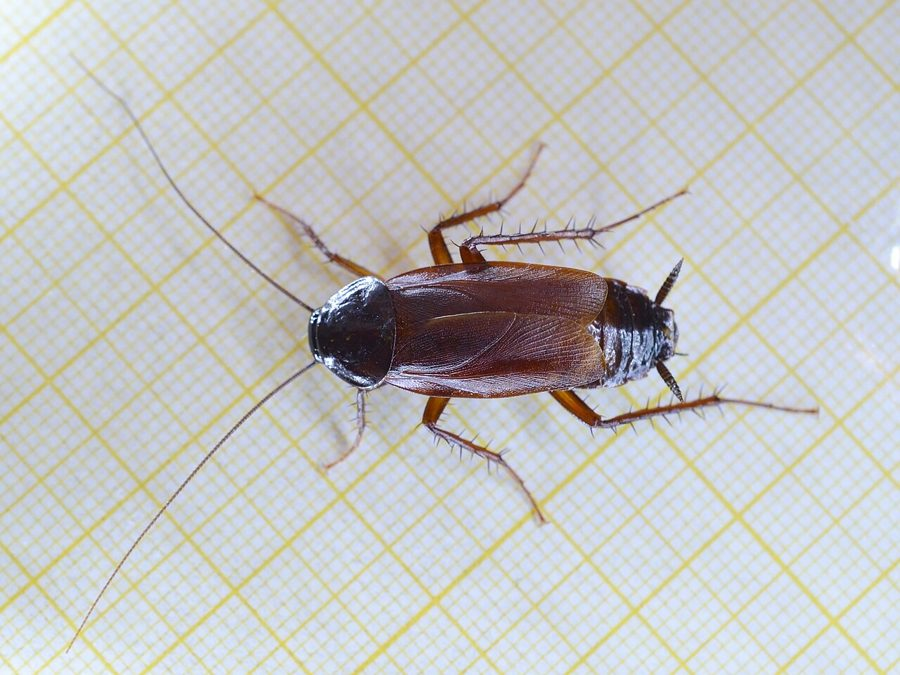

पूर्वी तिलचट्टाOriental Cockroach
Blatta orientalis · Blattidae · SFL-0007

- Scientific name
- Blatta orientalis Linnaeus, 1758
- Family
- Blattidae
- Hindi
- पूर्वी तिलचट्टा
- Status here
- native
- IUCN
- not evaluated
When to look कब देखें
Present all year.
पूर्वी तिलचट्टा / Oriental Cockroach
Blatta orientalis Linnaeus, 1758 — Blattidae
पूर्वी तिलचट्टा (ओरिएंटल कॉकरोच / पानी का कीड़ा / काला तिलचट्टा) — पूर्वी उत्तर प्रदेश के घरों के नम व ठंडे स्थानों (damp, cool areas), जैसे भूमिगत नालियों, बेसमेंट, कूड़े के ढेरों और खाद के गड्ढों में पाया जाने वाला एक मध्यम आकार का, गहरे भूरे से लेकर चमकदार काले रंग (dark brown to black) का तिलचट्टा है। इसकी लंबाई लगभग 20 से 27 मिमी होती है। इस प्रजाति में पंख अविकसित होते हैं; मादा के पास केवल बहुत छोटे पंखों के ठूंठ (very short vestigial wing stubs) होते हैं, जबकि नर के पास थोड़े बड़े लेकिन उड़ने में असमर्थ पंख होते हैं, इसलिए इस प्रजाति के दोनों ही लिंग उड़ नहीं सकते (neither sex flies)। यह अमेरिकी तिलचट्टे की तुलना में अधिक ठंडे तापमान को सहन कर सकता है। यद्यपि यह घरों में एक अस्वच्छ कीट और जीवाणुओं का संवाहक है, लेकिन बगीचों और प्रकृति में यह एक उपयोगी अपघटक (decomposer/detritivore) है जो सड़े-गले पत्तों और कचरे को खाता है।
Quick Identification त्वरित पहचान
| Feature | Description |
|---|---|
| Size | Medium-sized cockroach; adult body length around 20–27 mm (smaller than the American Cockroach) |
| Colouration | Glossy dark reddish-brown to jet-black body; uniform color without pale borders |
| Female Wings | Reduced to small, triangular wing pads (stubs) that do not cover the abdomen; cannot fly |
| Male Wings | Short wings that cover about 75% of the abdomen; non-functional for flight |
| Behaviour | Prefers damp, cool floor levels; runs slower than the American Cockroach |
Field tip: Look in damp under-sink areas, drains, or under bricks in garden hedges. Watch for dark brown or black, wingless-looking cockroaches crawling slowly compared to the reddish American Cockroach. They cannot fly. The female has much shorter wing stubs than the male and is shown in the field tip.
Morphology आकारिकी
Biometrics (typical measurements of adults in the northern Indian plains):
| Measurement | Male | Female |
|---|---|---|
| Body length | 20–25 mm | 22–27 mm |
| Forewing length | 12–16 mm | 4–6 mm (stubs) |
| Antennae length | 20–28 mm | 22–30 mm |
| Ootheca (egg capsule) length | 10–12 mm | 10–12 mm |
| Average weight | 400–600 mg | 500–700 mg |
Adult Cockroach:
- Exoskeleton: Broad, oval, slightly flattened body, dark purplish-black to dark mahogany-brown.
- Sexual Dimorphism:
- Female: Broader abdomen. Wings are reduced to short, non-overlapping wing stubs that cover only the first few segments of the thorax.
- Male: Narrower body. Wings cover two-thirds of the abdomen but are weak and incapable of supporting flight.
- Legs: Shorter and stouter than those of the American Cockroach, covered with dark spines.
Behaviour & Ecology व्यवहार और पारिस्थितिकी
- Cool and Damp Preference: Often called "water bugs" because they prefer damp environments with temperatures below 25°C. They are commonly found in crawl spaces, sewers, under damp leaves, and in basements rather than in dry, warm upper cupboards.
- Detritivore activity: Highly active at night. They crawl slowly along damp floorboards and outdoor soil surfaces searching for decaying organic matter.
- Aggregation: Group together in dark, moist corners, attracted by aggregation pheromones in their feces.
Life Cycle / Phenology जीवन चक्र
- Reproduction: Breeds mainly during the warm monsoon months, but adults can survive winter cold due to high temperature tolerance.
- Ootheca (Egg Capsule): The female produces a dark brown to black ootheca containing 16 eggs. She carries it for up to 30 hours before depositing it in a warm, sheltered location near food.
- Developmental times (at 22–26°C):
- Egg incubation: 40 to 60 days.
- Nymphal stages (7 to 10 instars): 10 to 12 months.
- Adult lifespan: 4 to 6 months.
Diet and Feeding Behaviour आहार और भोजन व्यवहार
- Omnivorous decomposer: Feeds primarily on decaying plant matter, starch-rich kitchen scraps, garbage, and animal dung.
- Recycling role: In outdoor garden settings, they act as important soil fauna. They break down leaf litter, dead roots, and decaying compost, accelerating the formation of humus in the soil.
Predators / Natural Enemies शत्रु
- Invertebrates: House Centipedes (Scutigera coleoptrata, MYR-0004, from this batch) and large ground spiders prey on nymphs.
- Amphibians: Common Asian Toads (Duttaphrynus melanostictus) hunt them near garden drains.
- Wasps: Ensign wasps parasitize their egg cases.
Agricultural / Human Relevance कृषि प्रासंगिकता
Domestic pest and hygiene risk:
- Pathogen vector: Like the American Cockroach, they travel through sewage and waste, carrying food poisoning bacteria (Salmonella, E. coli) to household surfaces.
- Odour: They secrete musty-smelling chemicals that can spoil food storage areas.
- Soil health: In wild farm edges, they are highly beneficial for turning soil organic waste into rich compost.
Expected Locally स्थानीय रूप से अपेक्षित
Not a field record. Written from published accounts for eastern Uttar Pradesh. No confirmed local sighting yet — if you have seen it, that is what the atlas needs.
अभी तक स्थानीय पुष्टि नहीं। यह विवरण प्रकाशित स्रोतों से है, किसी अवलोकन से नहीं।
A common resident throughout the Basti district. They are regularly observed in cool, damp basements, outdoor compost pits, and under garden bricks in the Harraiya and Vikramjot blocks. Unlike the American Cockroach, they are rarely found in dry upper rooms and are more common near floor drains.
Distribution वितरण
Global range: Considered native to South Asia and Central Asia; now widely naturalized across temperate and subtropical regions globally.
In India: Widespread in all plains and cooler hilly states.
In Uttar Pradesh: Common state-wide in all urban and rural districts.
In Basti district / eastern UP: Widespread across all blocks.
Research Questions शोध प्रश्न
Anyone can investigate these | कोई भी इन प्रश्नों की जाँच कर सकता है
- How many seconds can an Oriental Cockroach survive underwater inside a floor drain? — Observe and record drowning resistance.
- Do Oriental Cockroaches show a preference for damp leaf compost over dry newspaper piles? / क्या पूर्वी तिलचट्टा सूखे अखबारों के ढेर की तुलना में गीली पत्ती की खाद में छिपना अधिक पसंद करता है? — Conduct choice experiments.
- What is the ratio of male to female Oriental Cockroaches found in outdoor garden borders in September? — Track sex distributions.
- How do house centipedes attack Oriental Cockroaches compared to larger American Cockroaches? — Document predator-prey events.
- Does the population count of Oriental Cockroaches drop when compost heaps are turned over to expose them to sunlight? / क्या खाद के ढेरों को उलटने-पलटने से धूप के संपर्क में आने के कारण पूर्वी तिलचट्टों की संख्या कम हो जाती है? — Compare managed and unmanaged compost heaps.
Similar Species मिलती-जुलती प्रजातियाँ
| Species | How to tell apart | comparison |
|---|---|---|
| American Cockroach (Periplaneta americana) | Much larger (35–40 mm); reddish-brown with a yellow border on the pronotum; wings cover the entire tail; flies | अमेरिकी तिलचट्टा — बड़ा आकार, लाल-भूरा रंग, पंख बड़े |
| German Cockroach (Blattella germanica) | Much smaller (12–15 mm); light tan-yellow with two dark longitudinal lines on the pronotum | जर्मन तिलचट्टा — बहुत छोटा आकार, दो काली धारियाँ |
| Field Cricket (Gryllus bimaculatus) | Black body with yellow spots at wing bases; jumps; makes loud chirping sounds | झींगुर — गोल सिर, कूदने वाले पिछले पैर |
Field rule: Medium-sized dark brown or black cockroach (20–27 mm) with very short, non-functional wing stubs (female) or short wings (male), unable to fly, living in damp, cool drains is the Oriental Cockroach.
Taxonomy & Classification वर्गीकरण
Original description. Carl Linnaeus described the Oriental Cockroach as Blatta orientalis in 1758 in his Systema Naturae (ed. 10, vol. 1, p. 424). The type locality was listed as "the East." The genus name Blatta is Latin for a cockroach or light-shunning insect. The specific name orientalis is Latin for eastern.
Subspecies. Monotypic — no subspecies are currently recognised.
Family and order placement. Placed in the order Blattodea, family Blattidae (large cockroaches), subfamily Blattinae.
Phylogenetic notes. Blatta orientalis is closely related to the genus Periplaneta, representing a lineage that has adapted to cooler climates and developed wing reduction (brachyptery).
IUCN status rationale. Not evaluated (NE) by the IUCN Red List. It has a highly secure and stable population.
Photo Gallery फोटो गैलरी
References संदर्भ
- Linnaeus, C. (1758). Systema Naturae. Tenth Edition. Holmiae, p. 424. [original description]
- Bell, W. J., Roth, L. M. & Nalepa, C. A. (2007). Cockroaches: Ecology, Behavior, and Natural History. Johns Hopkins University Press, Baltimore.
- Beier, M. (1974). Blattariae (Schaben). Handbuch der Zoologie, Walter de Gruyter, Berlin.
- Rust, M. K., Owens, J. M. & Reierson, D. A. (1995). Understanding and Controlling the German Cockroach (includes comparative tables for Oriental). Oxford University Press.
- Cockroach Species File Database (2024). Blatta orientalis details.
- GBIF Occurrence Data — Blatta orientalis, India (2010–2025).
Source file: species/fauna/soil_fauna/oriental_cockroach.md